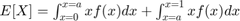

Contents
Q3a
We note that, intuitively, the exact original distribution of the histogram does not matter in deriving the mean intensity of the image after performing equalization across the two regions. We demonstrate this fact by a simple proof.
After equalization is performed, the distribution is uniform on and , with a probability mass of in . Let us calculate the expected mean after equalization. The expected mean is equal to , where is a random sample drawn from this distribution. We have

We note that, if , and if .
Integrating, we get
Q3b
Continuing the previous question, we note that when is the median, then we necessarily have . Thus, plugging this in to the previous formula, we have ![$E[X] = \frac{2a+1}{4}.$](myMainScript_eq17046017659914417843.png)
An important point to understand why we cannot simplify the answer further, i.e actually find the set of values of that are both mean and median, is to show that actually all can be both the mean and the median and thus the extra condition on being the mean of the original distribution is useless. A simple proof runs like this: assume the entire pdf to be concentrated on a point . This point will be both mean and median of it's distribution; hence, every point can satisfy such a property.
Q3c
We believe such a method (as described in part b) holds promise on underexposed or over exposed images. Such images contain a peak in their histogram at an extrema (very low or very high intensity). When conventional histogram equalization is applied, contrast is lost in such an image. For example if conventional histogram equalisation were applied to an under exposed image dark shades would get mapped to a brighter one. On the other hand if a median based piece wise equalisation is performed we can ensure that a dark tone can only be remapped to another value locally. This improves the contrast of the image, as can be observed in part d.
Q3d
As can be observed below, conventional histogram equalisation maps black values to grey which is an undesirable manipulation of the image, whereas piece wise histogram equalization manages to bring out similar detail among higher intensity pixels without ruining contrast.
Elapsed time is 0.974406 seconds.